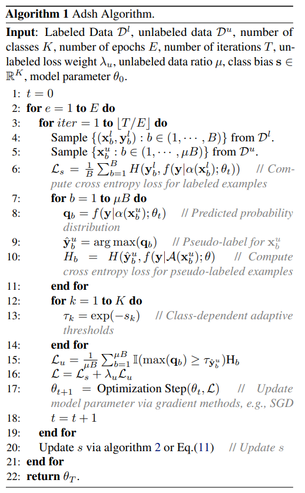

Introduction
As we know, "Dataset is expensive", semi-supervised learning(SSL) has proven to be successful in overcoming labeling difficulties by leveraging unlabeled data. However, currently there is a important problem while using SSL, Class-Imbalanced. Real-world datasets face usually this problem, some SSL algorithms ignore it and setup a fix threshold for all the classes while creating the pseudo-label, which will decrease the accuracy of prediction.
This paper proposed a new method named "adaptive thresholding (Adsh)" to solved this problem.
(Note: I am not going to explain any about SSL and everyone has a basic understanding of it by default)
Shortcoming of "Fix threshold"
Before we go into the detail of the Adsh, we need to know why the fix threshold is not a good way for real-world dataset.
In paper, it says:
the prediction confidence is biased towards the majority classes under class-imbalanced distribution, adopting a fixed threshold for all classes results in the minority classes losing too many unlabeled examples with correct pseudo-labels, resulting in low performance
That is: Since the model saw the majority classes more often, so when it see a new object, it will tend to classify it as majority classes, if we have a different thresholds here, for example, we set 0.95 as the confidence threshold for the majority classes, 0.65 as the threshold for minority classes, it could create more pseudo-labels for minority classes, and even though the threshold is lower, but because the model see these classes rarely, in this situation the model still believe that it has more than 0.65 confidence to be classify as minority classes, then it is better to classify is as minority classes.
That is why "adaptive thresholding" is necessary. # Notations Here we write some notations, which will benefit for our next step. Now we have \(K\)-classes classification task, and in training dataset, there are \(N\) labeled examples \(\mathcal{D}^l = \{ (x_1^l, y_1^l),...,(x_N^l, y_N^l) \}\) and \(M\) unlabeled examples \(\mathcal{D}^u = \{ x_1^u, ..., x_M^u \}\)
where \(x\in \mathcal{X}\subseteq{\mathcal{R}^d}\), \(\mathcal{R}^d\) denote the input \(d\)-dimensional feature vector, and \(y\in \mathcal{Y}\) are corresponding one-hot label. And: \[ \sum_{k=1}^{K}N_k=N \] \[ \sum_{k=1}^{K}M_k=M \] and we assume that the classes are sorted in descending order: \[ N_1\ge N_2\ge...\ge N_K \] \[ M_1\ge M_2\ge...\ge M_K \]
Here use imbalance ratio to describe the degree of class imbalance: \[ \gamma_l = \frac{N_1}{N_K} \qquad \gamma_u = \frac{M_1}{M_K} \] The model is: \(f(x;\theta): \mathcal{X}\leftarrow \mathcal{Y}\), where \(\theta\) is model parameter. The loss function of SSL is: \[ \mathcal{L}=\mathcal{L}_s+\lambda_u \mathcal{L}_u \] where: \(\mathcal{L}_s\) is supervised loss and \(\mathcal{L}_u\) is unsupervised loss, \(\lambda_u > 0\) is trade-off parameter. \(\mathcal{L}_s\) use usually standard cross-entropy loss.
How fix threshold work
Before we step into the detail of "Adsh", let's learn about the "fix threshold" first, here we use "FixMatch", since it work pretty good, and the method it use is similar as "Adsh", but more easier to understand, so it would be helpful for us to understand the "Adsh" later.
The basic steps of this method are:
- use weak and strong augmentation on unlabeled image
- input the weak augmented image in to the model, and got the prediction
- select the prediction with high confidence as pseudo-label
- use strong augmented image
The loss is as following: \[ q_b=f(y|\alpha(x_b^u),\theta) \] \[ \hat{y}_b^u=argmax(q_b) \tag{1} \] for the same sample \(x_b^u\), calculate the probability: \[ f(y|A(x_b^u),\theta) \tag{2} \] and then calculate the CE for (1) and (2): \[ H(\hat{y}_b^u,f(y|A(x_b^u),\theta)) \] where:
\(\alpha(.)\) means weak augmentation
\(A(.)\) means strong augmentation
and the threshold here is \(\tau=0.95\)
The final loss is: \[ L_u = \frac{1}{\mu B}\sum^{\mu B}_{b=1}I(max(q_b)\geq \tau)H(\hat{y}_b^u,f(y|A(x_b^u),\theta)) \] where:
\(I(.)\) is indicator function
\(\mu\) is relative batch size of labeled and unlabeled data
\(B\) is the number of labeled sample in one batch
\(\mu B\) is the number of unlabeled sample in one batch
And this is how fix threshold work, and the disadvantage of it we have mentioned above.
Adsh
now we could start our main part, that is: Adsh. The threshold of this method is different for different classes in each epoch. The main algorithm is:

we could fine that this algorithm is very similar as the fix threshold we mentioned above, the different part is the update of \(s\).